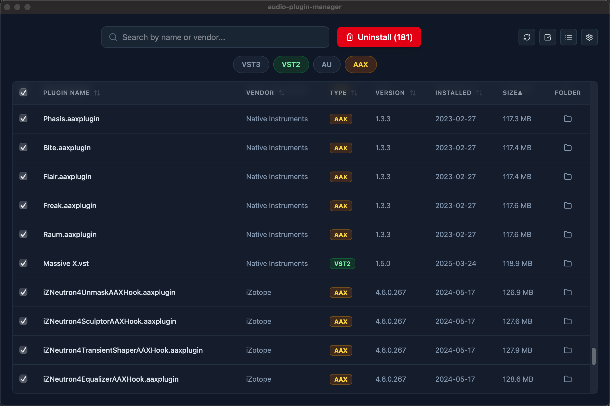
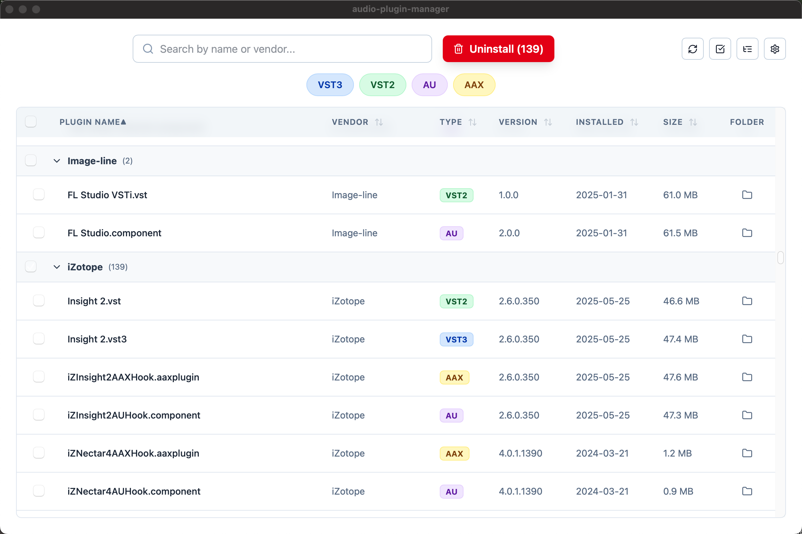
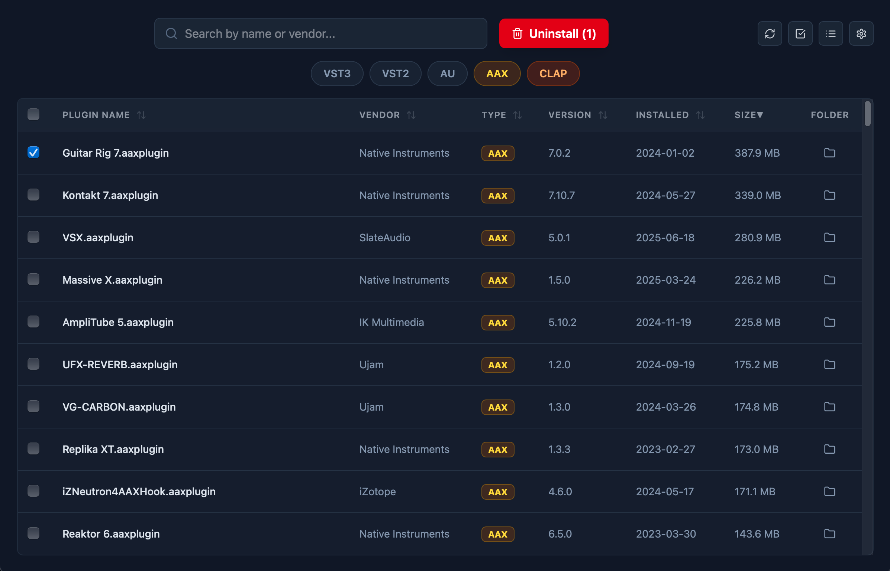

五种格式，一个视图
扫描用户与系统标准插件目录，支持 VST3、VST2、AU、AAX 和 CLAP。版本、位置与文件大小，一目了然。
THE INTERFACE / 01



BUILT FOR YOUR STUDIO / 02
从第一次扫描，到一次有把握的整理。
让插件库里的每个细节，都有迹可循。
扫描用户与系统标准插件目录，支持 VST3、VST2、AU、AAX 和 CLAP。版本、位置与文件大小，一目了然。
按产品或厂商归类，也可以逐份查看安装。同名插件在用户与系统目录中的副本，都能清楚区分。
搜索名称与厂商，按格式筛选或排序。保留搜索、筛选与分组展开状态，再次打开，继续熟悉的工作流。
清理前预览插件与关联资源的文件清单。关联文件默认不勾选，由你确认哪些预置与资源应该加入本次清理。
确认后的文件移入 macOS 废纸篓。通过清理历史查看成功、失败与跳过的项目，保留原始路径，方便回溯。
支持浅色、深色与跟随系统主题。后台扫描展示进度与未完成的结果，深度扫描也可以随时取消。
ROOM FOR IDEAS / 03
插件库随着创作不断生长。PluginHub 帮你看清安装了什么、还需要什么，以及一次清理实际会涉及哪些文件。
把 macOS 标准目录中的插件汇集在一起，查看格式、版本与实际安装位置。
选择不再需要的安装，审阅清理预览。关联资源可能被多个产品共用，勾选前先核对详情。
把确认的文件移入废纸篓，在历史中查看执行结果。文件仍在废纸篓时，可以通过 Finder 按需恢复。
VERSIONS & AVAILABILITY / 04
第一轮公测已结束。关于下一轮更新、版本获取或使用反馈，欢迎直接与我联系。
联系开发者THE ESSENTIALS
免费
为日常插件整理，准备好基础工具。
A CLOSER LOOK
$5
进一步查看每次安装背后的关联资源。
两个版本均待后续发布，获取信息请联系开发者。
下一个项目 / 01
让声音，拥有自己的性格。